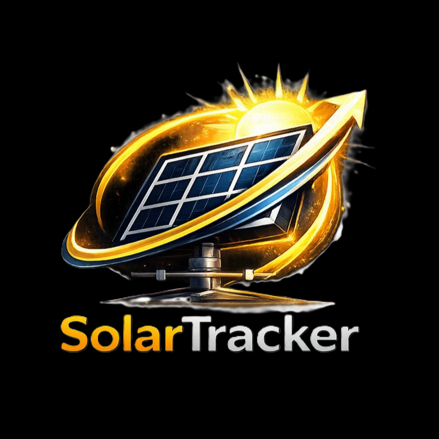
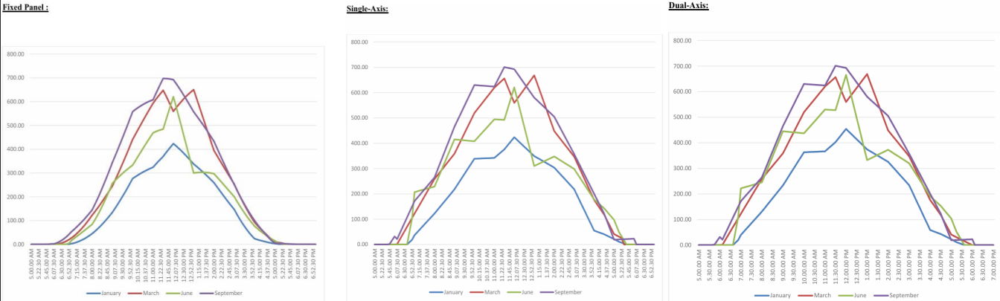

افزایش بازدهی پنلهای خورشیدی با ردیابی دقیق در دو محور با استفاده از ۴ سنسور LDR و آردوینو
پروژه حاضر با هدف ارتقای کارایی پنلهای خورشیدی، به طراحی و ساخت یک ردیاب خورشیدی دو محوره با استفاده از ۴ سنسور LDR اختصاص دارد. برخلاف سیستمهای تکمحوره که تنها در یک راستا حرکت میکنند، ردیاب دو محوره قادر است با پیگیری دقیق موقعیت خورشید در دو جهت عمودی و افقی، پنل را در هر لحظه عمود بر پرتوهای تابشی قرار دهد و با وجود تغییر زاویه خورشید نسبت به زمین در فصول مختلف سال، بازده را ثابت نگه دارد.
در این سیستم، از یک برد آردوینو UNO به عنوان پردازنده مرکزی برای دریافت دادههای سنسورها و کنترل حرکت موتورها استفاده شده است. چهار سنسور LDR به صورت حساس به نور در چهار جهت اصلی (شرق، غرب، شمال و جنوب) نصب شدهاند. سیگنالهای آنالوگ این سنسورها پس از تبدیل به دادههای عددی، در میکروکنترلر با یکدیگر مقایسه شده و اختلاف نور در دو محور محاسبه میشود.
سازهی اصلی با استفاده از فناوری چاپ سهبعدی و با جنس پلاستیک PLA+ ساخته شده است. برای حرکت پنل در محور افقی (شرق-غرب) از موتور قدرتمند MG995 و برای محور عمودی (شمال-جنوب) از موتور SG90 استفاده شده است. این انتخاب به دلیل تحمل وزن سازه توسط موتور قویتر و کاهش هزینه و مصرف انرژی در محور کمبار انجام شده است. همچنین یک خازن ۱۰۰۰ میکروفاراد در مدار تغذیه موتور اصلی تعبیه شده تا از نوسانات ولتاژ و ریست شدن ناگهانی آردوینو جلوگیری کند.
سیستم از قابلیت تشخیص شب برخوردار است و در تاریکی کامل، موتورها را خاموش کرده و مصرف انرژی را به حداقل میرساند. الگوریتم کنترلی به گونهای طراحی شده که موتورها با حرکتهای نرم و گامهای کوچک، از لرزش و آسیب به دندهها جلوگیری کنند. همچنین به دلیل استفاده از روش حلقه بسته مبتنی بر سنسور، سیستم بدون نیاز به اطلاعات نجومی یا کالیبراسیون جغرافیایی، در هر نقطهای از جهان قابل استفاده است و آن را به گزینهای مناسب برای کاربریهای عمومی و سیار تبدیل میکند.
افزایش بازدهی
ردیاب دو محوره به طور میانگین ۳۰ تا ۴۰% انرژی بیشتری نسبت به پنل ثابت تولید میکند.
آزیموت و ارتفاع
ردیابی در دو جهت شرق-غرب (حرکت روزانه) و شمال-جنوب (تغییرات فصلی) برای جذب حداکثری انرژی.
سنسور نوری
تشخیص دقیق موقعیت خورشید با مقایسه اختلاف نور در چهار جهت اصلی و اصلاح خطاهای محیطی.
چاپ سهبعدی
سازهای مقاوم و سبک با استفاده از فناوری چاپ سهبعدی و جنس پلاستیک PLA+.

';">تحقیق و پژوهش
طرح اولیه روی کاغذ
بستن مدار
جلوه بصری
طراحی الگوریتمهای پیشنهادی
انتخاب الگوریتم برتر
کدنویسی
اصلاح اولیه کد
تست ۱، ۲، ۳
تست نهایی
تحقیق و پژوهش
طرح اولیه روی کاغذ
ساخت قطعات (با کمک پرینتر سهبعدی)
خرید لوازم موردنیاز
طراحی الگوریتمهای پیشنهادی
انتخاب الگوریتم برتر
کدنویسی
اصلاح اولیه کد
تست ۱، ۲، ۳
تست نهایی
تحقیق و پژوهش
ساخت قطعات (با کمک پرینتر سهبعدی)
خرید لوازم موردنیاز
بستن مدار
انتخاب الگوریتم برتر
کدنویسی
اصلاح اولیه کد
تست ۱، ۲، ۳
تست نهایی
دقت ردیابی بهتر از ۱ درجه
برای جزئیات بیشتر کلیک کنید۳۰ تا ۴۰ درصد بیشتر از پنل ثابت
برای جزئیات بیشتر کلیک کنیدکارکرد در شرایط نوری مختلف
برای جزئیات بیشتر کلیک کنیداستفاده در هرجا بدون کالیبراسیون
برای جزئیات بیشتر کلیک کنید
راست : دومحوره | وسط : تکمحوره | چپ : پنلثابت
سیستم ردیاب دو محوره طراحیشده در این پروژه، نسبت به پنل ثابت افزایش بازدهی بین ۳۰ تا ۴۰ درصد را به همراه دارد. همچنین در مقایسه با سیستمهای تکمحوره که تنها در یک جهت (شرق-غرب) حرکت میکنند، ردیاب دو محوره با قابلیت حرکت در هر دو جهت (شرق-غرب و شمال-جنوب)، توانایی جذب انرژی بیشتری داشته و بازدهی را ۸ تا ۱۵ درصد (حتی ۲۰%!) نسبت به تکمحوره افزایش میدهد. این مزیت بهویژه در فصول مختلف سال که زاویه خورشید تغییر میکند، بهخوبی قابل مشاهده است.
روی صفحهی ویدیو کلیک کنید.